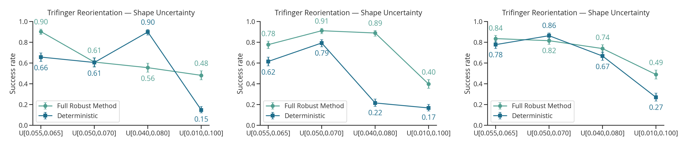
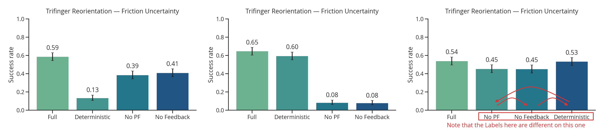
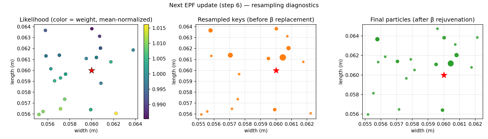
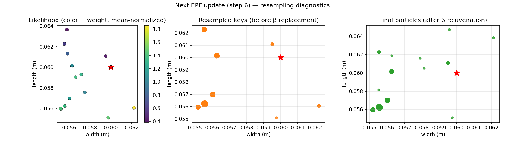
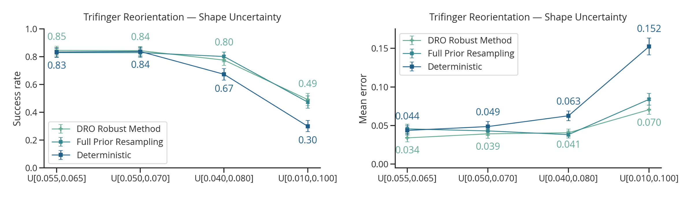
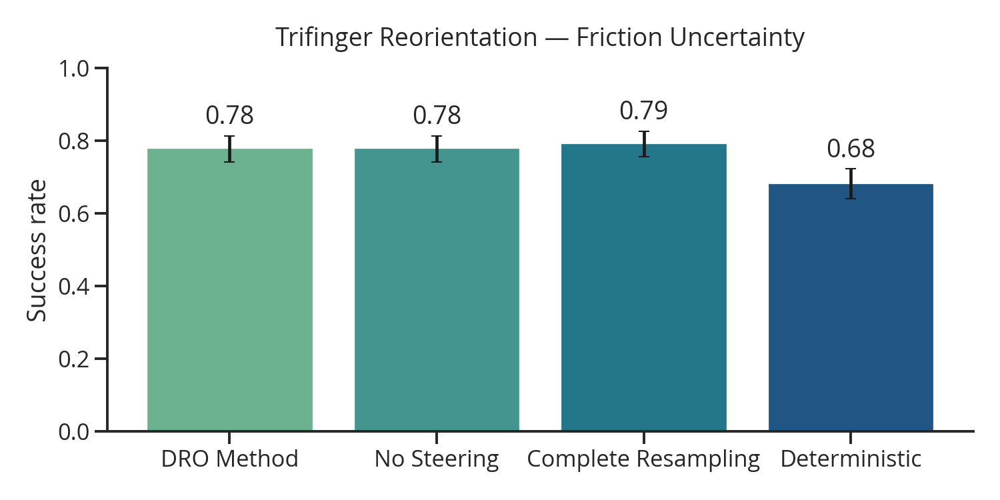
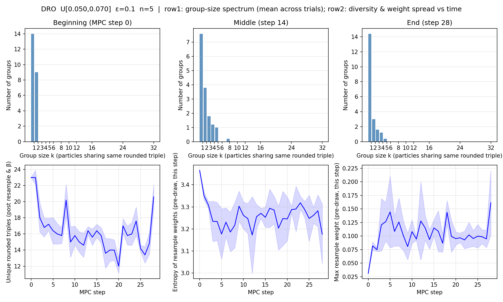

2026 April 17
Last time, we talked about my struggles with getting results that looked good. It was decided that I should investigate shape uncertainty on the Trifinger task some more. There was also an idea floated to have \mu be a decision variable. I also introduced a pretty heuristic resampling method.
Insight 1: There is high sensitivity to hyperparameters, and optimal hyperparameters are not consistently found by optuna

I think there is a thought that if I did a super large-scale experiment where I ran many different runs of this setup, I could get statistically significant/reliable results, however that would be computationally expensive.
The friction uncertainty task also exhibits the same high-variance with respect to different runs/hyperparameters:

After our discussion last time, I wanted to actually investigate if our likelihood was capturing what we want. In short, I found that the scales were pretty small, and the models inaccurate enough that the likelihood didn’t really work that well. Here is a cursor-generated plot with the best of the diagnostic results that I could get:

Note that the difference between high probability and low probability points is pretty small. If \gamma is increased to try to widen this gap, we get the following:

Which is no where near the true value.
I had a thought to, instead of using reweighting/resampling to do sys ID, what if you used it to convert the problem into a true min-max robust control problem. Here is the mathematical justification I came up with.
Let’s start by defining a distributionally robust optimization problem [1] over policies and a KL-divergence \epsilon-ball around a prior as the ambiguity set: \min_\pi \max_{q \in \mathcal Q} \mathbb E_{\xi \sim q(\xi)} [C(\pi; \xi)] \mathcal Q := \{ q \in \Delta^\Xi : KL(q \| p) \leq \epsilon \} Where p: \Xi \rightarrow \mathbb R_{+} is the prior probability density function. This problem has the same min-max setup as classic robust control, but now, we are taking a max with respect to distributions. The basic approach I am going to propose is to do the following at each MPC re-solve in the closed loop execution of the controller:
Once we have q^*, step 2 is just using our original expectation-based C3 solve. So, here, I will explain how to do step 1.
We consider the inner problem for a defined \pi (we use the previous solve): \max_{q \in \mathcal Q} \mathbb E_{\xi \sim q(\xi)} [C(\pi; \xi)] The first thing we will do is construct the lagrangian with respect to the KL-divergence constraint: \bar {\mathcal L}(q, \tau) = \mathbb E_{\xi \sim q(\xi)} [C(\pi; \xi)] - \tau KL(q \| p) + \tau \epsilon Our process for approximately solving for q^* will be to determine a suitable Lagrange multiplier \tau^* > 0, then analytically solve \max_{q \in \Delta^\Xi} \bar{\mathcal L} (q, \tau^*). It turns out that solving this Lagrangian is easy, as you can apply Donsker and Varadhan’s lemma:
Lemma. (Donsker-Varadhan) For measureable function h: \Xi \rightarrow \mathbb R and any probability distribution p \in \Delta^\Xi, we have: \ln \mathbb E_{\xi \sim p} [\exp(h(\xi))] = \sup_{q \in \Delta^\Xi} \left\{ \mathbb E_{\xi \sim q} [h(\xi)] - KL(q \| p) \right\} The suprema is obtained with the following probability density function: q^*(\xi) = p(\xi) \exp(h(\xi)) / Z, where Z = \mathbb E_{\xi' \sim p}[\exp(h(\xi'))] is a normalization constant. This distribution is known as the Gibbs or Boltzmann distribution.
This lemma can be found in page 159 of [2] and also as lemma 1.1.3 in [3]. Applying it gets us to: \max_{q \in \Delta^\Xi} \bar{\mathcal L} (q, \tau) = q^*(\xi) = p(\xi) \exp\left(\frac{C(\pi; \xi)}{\tau} \right) / Z If we have a collection of previous MPC samples from a previous q', we can approximately re-weight them according to this distribution: q(\xi^{(i)}) \propto w(\xi^{(i)}) = \frac{p(\xi) \exp(C(\pi; \xi^{(i)})/ \tau^*)}{q'(\xi^{(i)})} I propose resampling according to these weights, and estimating q'(\xi^{(i)}) with the number of samples that are identical to \xi^{(i)}. Then, this fits nicely into the resampling technique I proposed last time. Also similar to last time, it would be very prudent to have a rejuvenation step that resamples from the prior with probability \beta for each particle. Finally, I use the following to set \tau: \tau^* = \sqrt{\frac{\mathbf{Var}_p (C(\pi; \xi^{(i)}))}{\epsilon}}, where \mathbf{Var}_p(C) in practice looks like the empirical variance of the particles costs, while also doing the re-weighting for q' via counting identical particles. There is mathematical justification for this setting of \tau, but I haven’t really gone through it completely.
Altogether, I assume p is a uniform distribution and the full robust sampling looks like this:
Given: previous MPC particles \xi^{(1)}, ..., \xi^{(N)} and corresponding costs C^{(1)}, ..., C^{(N)} with mean \bar C = \sum_i C^{(i)} and identical counts \tilde q'(\xi^{(i)}):
- Determine \tau^* \gets \sqrt{\sum_i \frac{(C^{(i)} - \bar C)^2}{\tilde q'(\xi^{(i)}) \epsilon (N - 1)}}
- Solve for weights w^{(i)} = \frac{\exp(C^{(i)} / \tau^*)}{\tilde q'(\xi^{(i)})}
- Resample \xi^{(1)}, ..., \xi^{(N)} according to weights w^{(i)}
- For each particle, replace with random \xi \sim p(\xi) with probability \beta.
There is a nice intuition that this is performing something similar to boosting in machine learning—samples where the controller had high cost get up-weighted to reduce risk.
The first thing I do is design an experiment where I first hyperparameter tune extensively for the deterministic method on the nominal distribution (cube with sides of 6 cm), then I take share those hyperparameters between all methods, and include \alpha=100, \beta\in \{0.3, 1.0\}, \epsilon=0.1 as parameters for the other controllers. Here are the results across various shape distributions:

As you can see, the DRO method and full resampling method (\beta=1.0) have similar performance. Both distributional controllers are more robust to the deterministic controller as the distribution changes—with very statistically significant results.
The next test is on frictional uncertainty; I only vary the fingertip friction coefficent, and use a distribution \mu \in \text{Unif}[0.2, 1.8], separately per finger. Results for frictional uncertainty:

My take away from this experiment is that having the distributional aspect is really the most important, and feedback/robust resampling don’t matter that much.
Some Diagnostics: I had Cursor generate a plot to visualize the distribution of the samples at various times in the trifinger rollout. Here is that graph:
